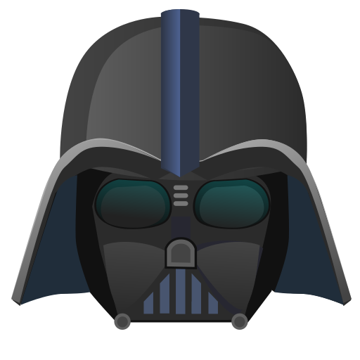

- Breaking Bad - Negro y Azul
- Game of Thrones - Main Title Theme
- Star Wars - Imperial March
Meu nome é Mateus , tenho 21 anos e sou estudante do segundo semestre de ADS.
Conta a história de Walter White, um professor de química que, após descobrir um câncer, passa a produzir metanfetamina para garantir o futuro da família.
Se passa em um mundo medieval fictício, onde várias famílias nobres disputam o poder pelo Trono de Ferro. A trama envolve política, guerra, traições e elementos fantásticos como dragões.

Uma saga de ficção científica que traz a luta entre luz e o lado sombrio da Força pelo espaço
| DIAS DA SEMANA | ||||||
|---|---|---|---|---|---|---|
| HORÁRIOS | ||||||
| SEG | TER | QUA | QUI | SEX | ||
| 18h30 | EST | POO | EST | POO | AE1 | |
| 19h25 | EST | POO | EST | POO | AE1 | |
| 20h40 | FE1 | RCO | COE | FE1 | RCO | |
| 21h35 | FE1 | RCO | COE | FE1 | RCO | |